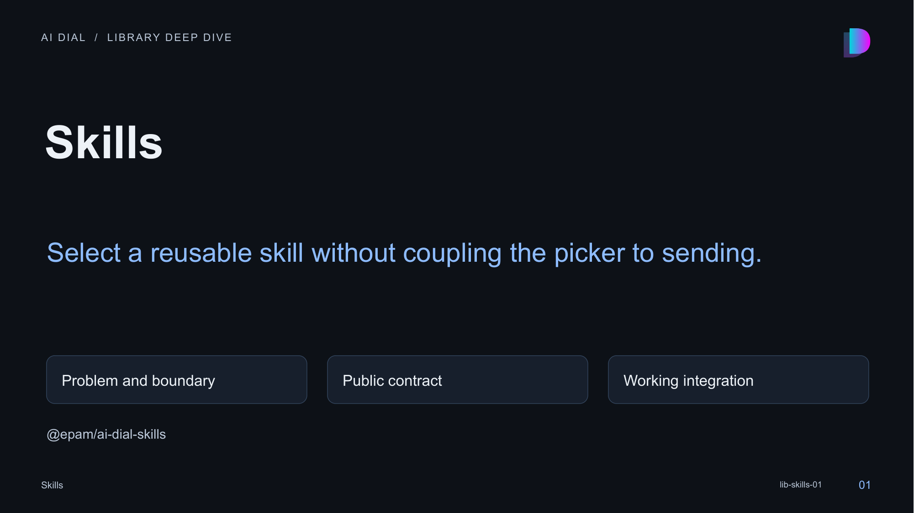

01 · Skills

Speaker notes and sources
This session explains select a reusable skill without coupling the picker to sending. The library is a local private workspace package at libs/skills. Its manifest, source exports, tests and actual consumers were inspected. Package publication has not been verified; use the workspace integration shown here.
- libs/skills/README.md:1-378
- libs/skills/src/index.ts:1-30
- libs/skills/package.json:1-42
- libs/skills/src/components/FavoriteSkillsPanel/FavoriteSkillsPanel.tsx:37-294
- libs/skills/src/models/favorite-skills-panel-props.ts:34-62